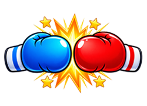
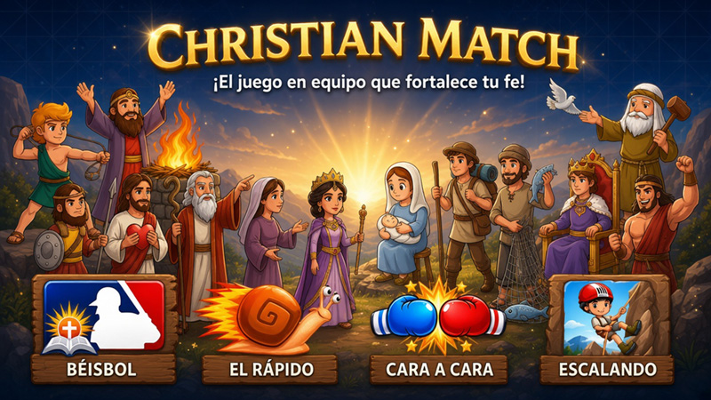
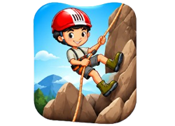
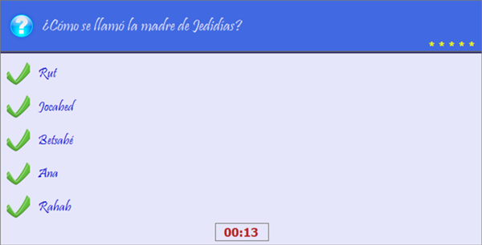
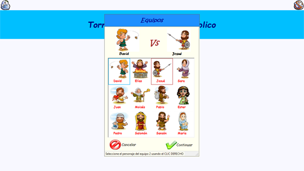
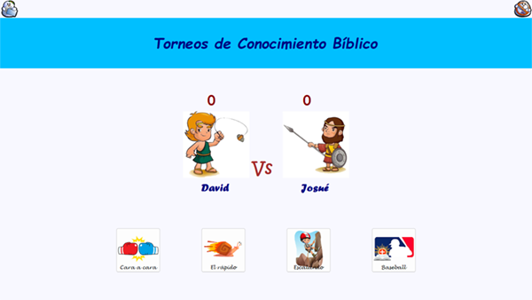
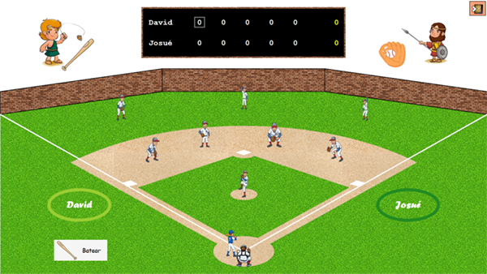

01Cara a Cara
Pregunta a pregunta, punto a punto.
Cada equipo responde por turnos y suma puntos. Sencillo, directo y perfecto para empezar la noche.
Juegos bíblicos para tu grupo
Cuatro juegos, dos equipos y una Biblia. El plan perfecto para tu célula, tu grupo de jóvenes o una noche con amigos.
Descarga, descomprime y juega. Sin cuenta y sin instalador.

La idea
Olvídate de las dinámicas de siempre. ChristianMatch reúne cuatro minijuegos donde dos equipos se enfrentan respondiendo preguntas de la Biblia. La pasan increíble, compiten sanamente y, sin darse cuenta, comparten y refuerzan lo que saben.
Para romper el hielo y compartir algo más que la reunión.
Refuerza lo aprendido mientras el grupo se divierte.
Sin internet, funciona en cualquier retiro o vigilia.
Los juegos
Elige el desafío, forma tu equipo y compite sanamente.

01Pregunta a pregunta, punto a punto.
Cada equipo responde por turnos y suma puntos. Sencillo, directo y perfecto para empezar la noche.
Aquí cada segundo cuenta.
El primero en responder correctamente se lleva los puntos. Reflejos, emoción y mucha honestidad.

03El camino a la cima se pone difícil.
Decide cuánto arriesgar en cada paso. Si aciertas, subes; si fallas, retrocedes. ¿Llegas hasta la corona?
¡Que comience el juego!
El béisbol bíblico, automatizado. Batea preguntas, avanza por las bases y anota carreras.
Cómo jugar
Sin configuraciones complicadas. En pocos minutos ya están jugando.
Baja el archivo ZIP, descomprímelo en una carpeta y ejecuta ChristianMatch.exe.
Cada equipo escoge el personaje bíblico que lo representará durante toda la partida.
Selecciona el juego y configura el tiempo, la dificultad o las preguntas que quieras usar.
Proyecta la pantalla, arma los equipos y que empiece la competencia.
Solo necesitas un PC con Windows y una pantalla para compartir.
El propósito
No se trata solo de ganar, sino de crecer como grupo. Cada pregunta incluye un comentario con la respuesta y su contexto, así el juego se convierte en una conversación donde todos descubren algo nuevo.

Para líderes y anfitriones
Las herramientas que necesitas para organizar una reunión memorable, sin complicarte.
Ajusta el tiempo de respuesta, el valor de las preguntas o la dificultad según el tipo de reto que quieras vivir.
Crea y personaliza preguntas para alinearlas con el tema de tu estudio, tu célula o la enseñanza de la semana.
Descarga, descomprime y ejecuta en cualquier PC con Windows. Sin instalaciones complejas ni conexión a internet.
Así se ve una partida
Vistas reales de la app para que sepas cómo se juega antes de descargar.



Desliza para ver las tres vistas
Preguntas frecuentes
Si tu duda no está aquí, escríbenos. Con gusto te ayudamos a preparar la próxima reunión.
Escríbenosymlee0919@gmail.comSí. Es totalmente gratis: descárgalo y úsalo sin costo, sin cuentas y sin suscripciones.
No. Una vez descargado, funciona sin conexión a internet. Es ideal para campamentos, retiros y lugares donde la señal no llega.
Se juega con dos equipos. Pueden participar desde un par de jugadores hasta un grupo grande; todos comparten la misma pantalla y se turnan para responder.
La versión actual es para Windows. Para jugar necesitas un PC con Windows conectado a una pantalla o proyector.
Sí. La app incluye la gestión del cuestionario para crear y personalizar preguntas, y así alinearlas con el tema de tu estudio o célula.
Conecta el PC al televisor o proyector por HDMI y comparte la pantalla. Los dos equipos responden desde la misma pantalla, así que todos pueden seguir el juego.
Windows y .NET Framework 3.5 o superior. Descarga el ZIP (9,1 MB), descomprímelo y ejecuta ChristianMatch.exe. No hay instalador.
Sí. Al funcionar sin internet y necesitar solo un PC, es una opción práctica para campamentos, vigilias y retiros.
¿Listos para el próximo reto?
Elige a tu personaje bíblico favorito, arma los equipos y descubre cuánto saben de la Biblia. La descarga es gratis y toma menos de un minuto.